呆猫祝老大们新年快乐喵！！！(づ￣ 3￣)づ
（按下两侧的按钮可以看见呆猫的表情包！！！【虽然很糊】）
呆猫の自我介绍
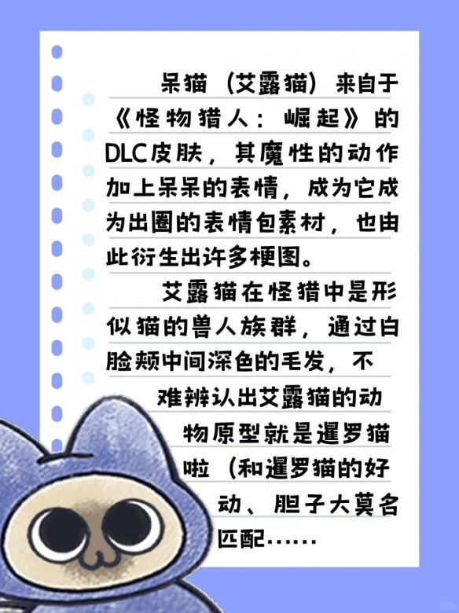
老大の十四把武器
 片手剑
片手剑
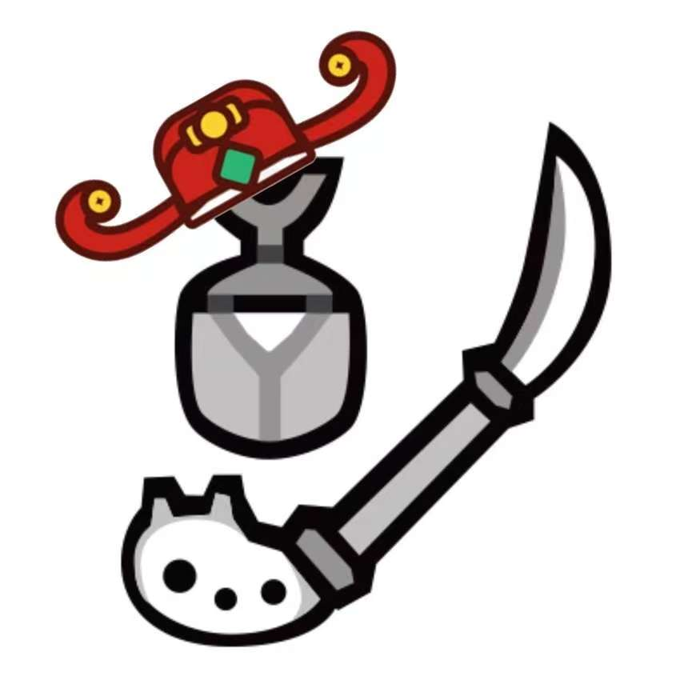
操虫棍
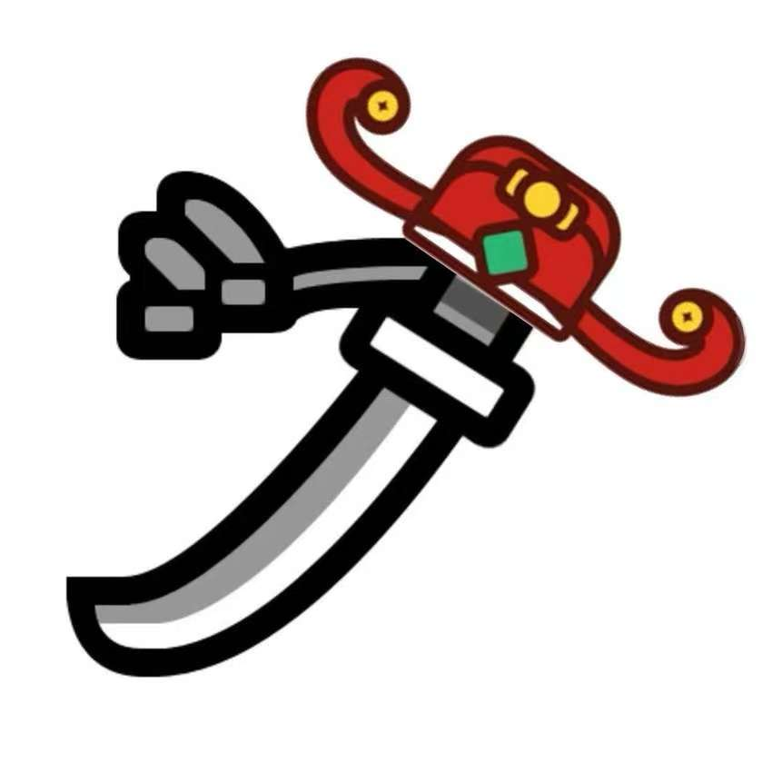
太刀
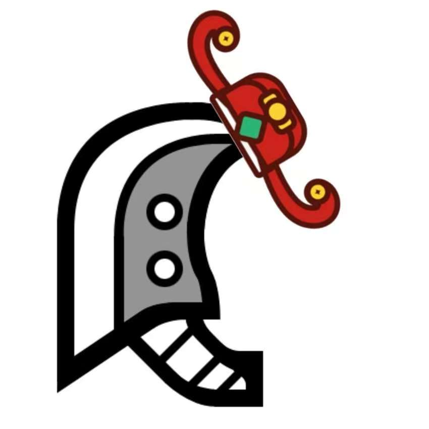
大剑
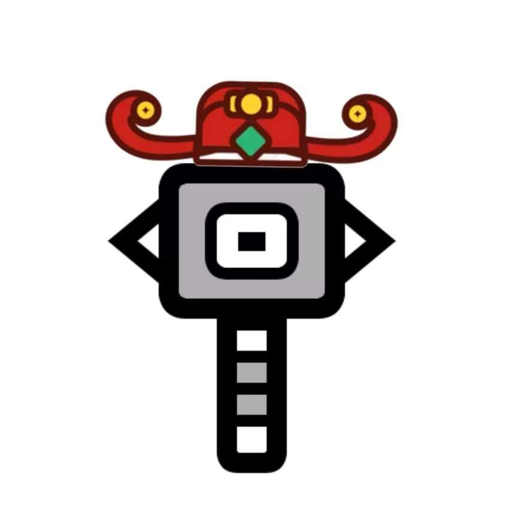
大锤
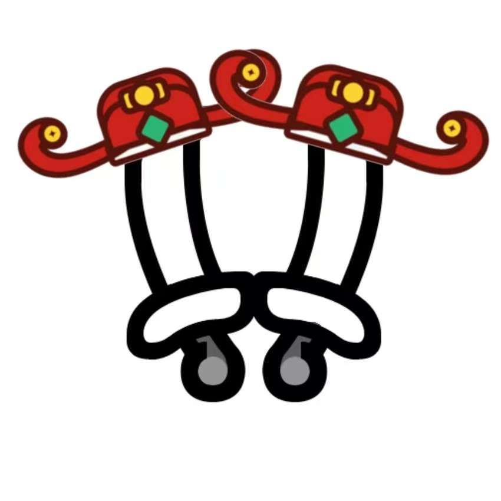
双刀
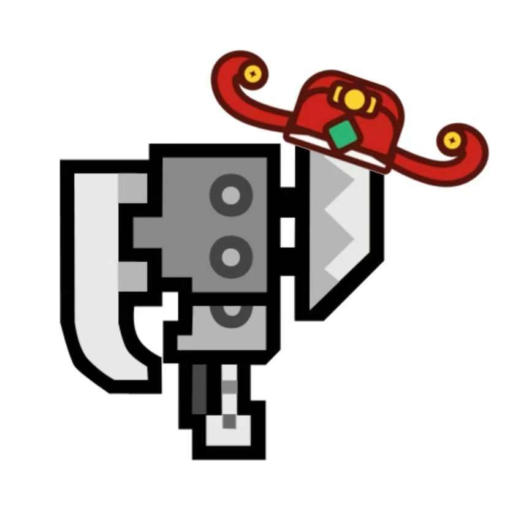
斩斧
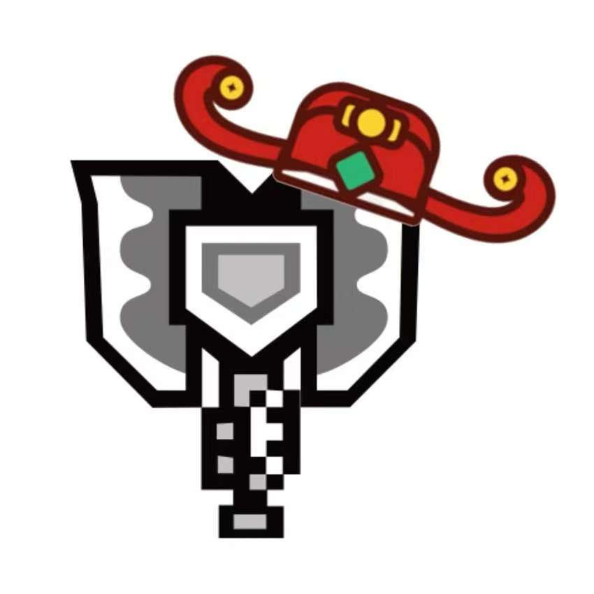
盾斧
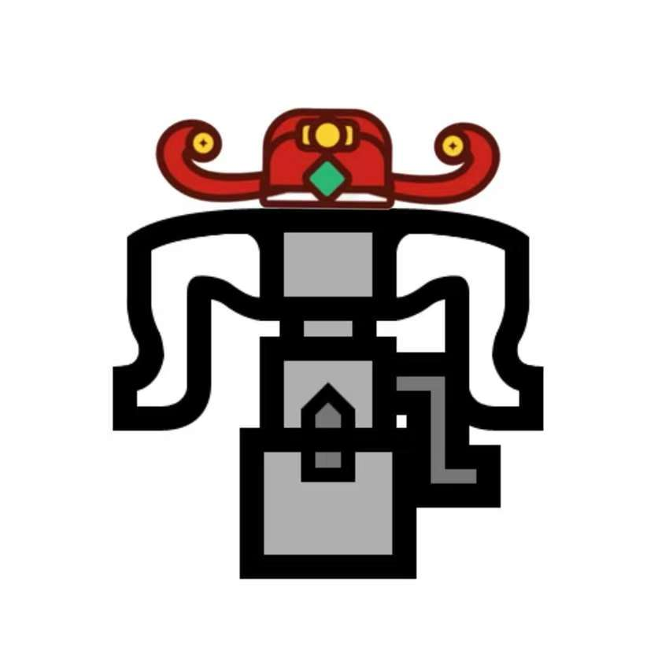
重弩
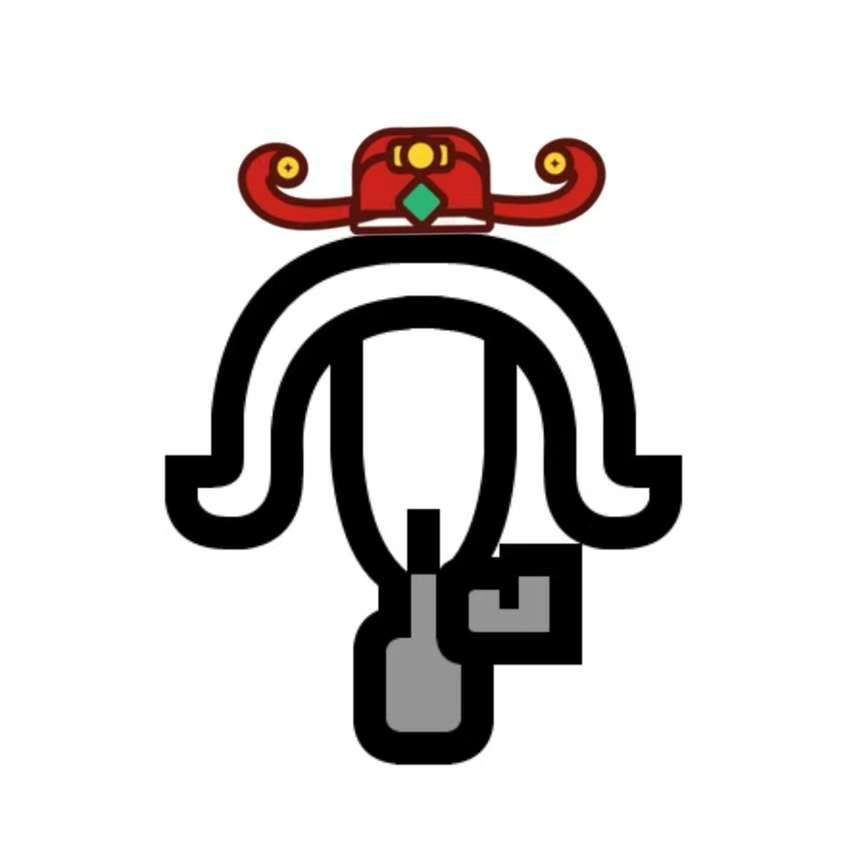
轻弩
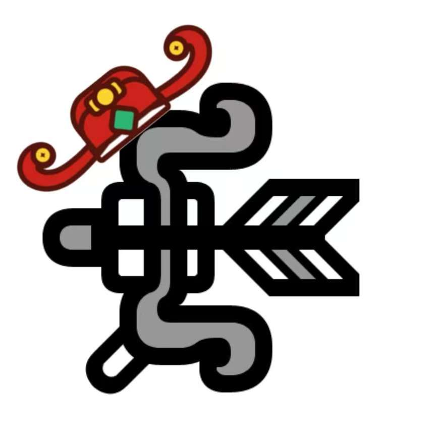
弓箭
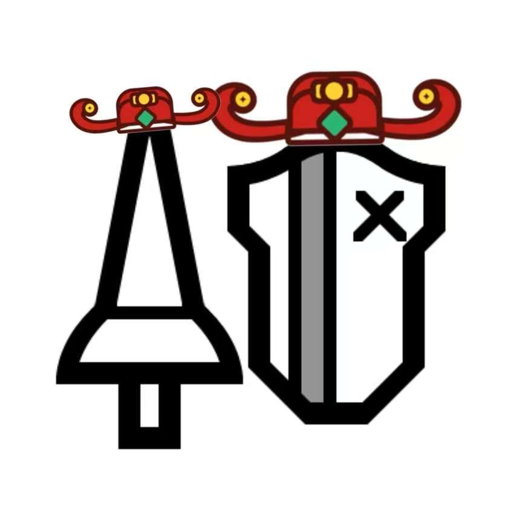
长枪
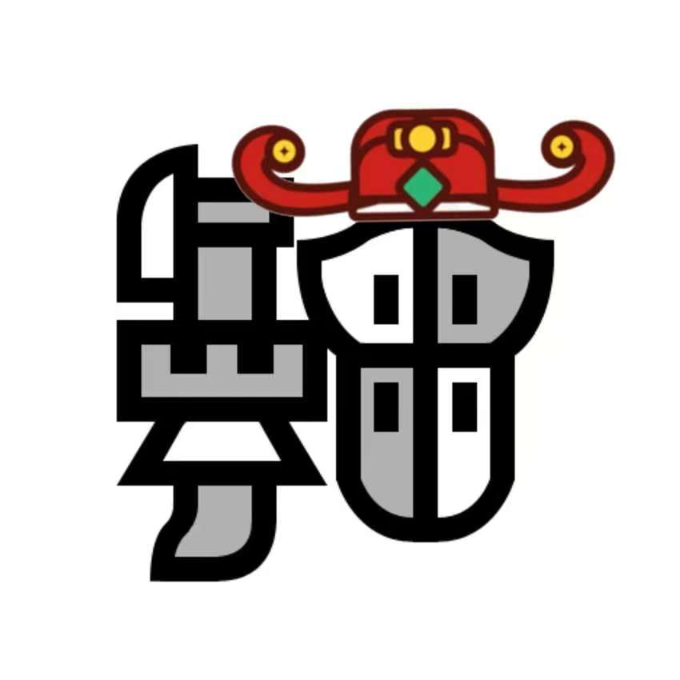
统枪
片手剑
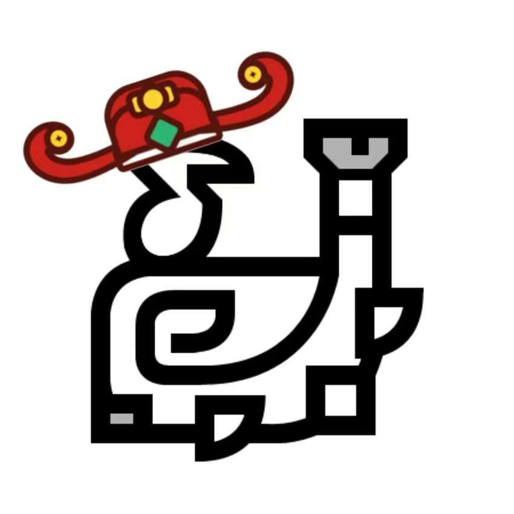
狩猎笛
愿新年的阳光温暖老大的每一个日子，让每一天都充满希望和喜悦喵~
呆猫对老大の新年展望
- 学习天天进步，前程似锦喵！
- 游戏把把获胜，心情舒畅喵！
- 身体坚定倍棒，活力四射喵！
- 在校园跑的折磨下存活下来喵！
呆猫の新年寄语
亲爱的老大们：
愿你们在新的一年里：
写代码时思路清晰，bug远离喵
改需求时心平气和，效率高分喵
上线时一次通过，好评如潮喵
新年趣味小贴士
呆猫提醒您：
- 熬夜码代码要适度，身体最重要喵！
- 遇到问题多思考，解决方案总会有的喵
- 游戏娱乐不可多，限度要把握喵
- 记得定期备份代码，以防万一喵
呆猫の日常
每天都要：
- 按时吃饭，营养均衡喵
- 适度游戏，快乐打猎喵
- 劳逸结合，适当学习喵
- 保持微笑，心情愉快喵